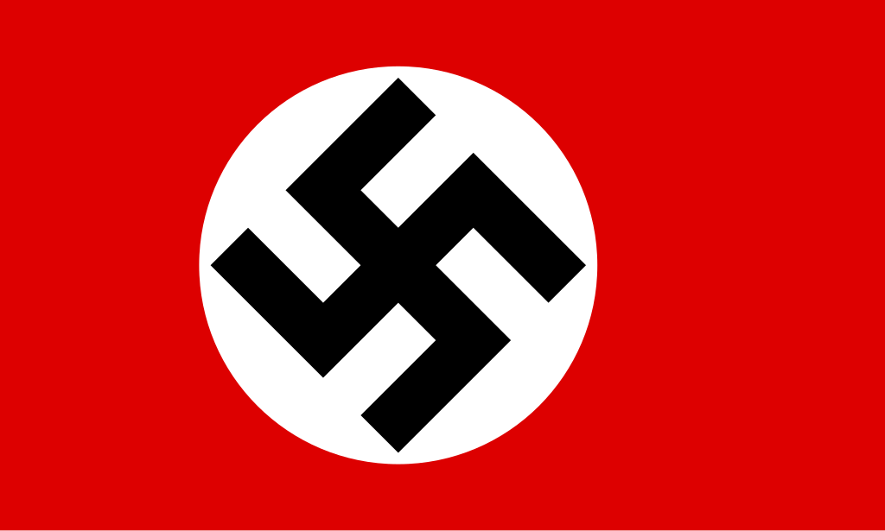

Operace Barbarossa - Digitální Památník
Interaktivní časová osa a mapa událostí

.jpg)
Interaktivní časová osa a mapa událostí
22. června 1941 se začala operace Barbarossa, německý útok na Sovětský svaz.
Zpět k mapěObrana Brestské pevnosti se uskutečnila od prvních výstřelů Operace Barbarossa 22. června do 30. června 1941, přičemž drobné boje a přestřelky trvaly až do konce července 1941.
Zpět k mapěBitva o Bialystok-Minsk, která trvala pouhých 18 dní, od 22. června do 9. července 1941, a byla jednou z prvních akcí operace Barbarossa
Zpět k mapěPrvní bitva o Smolensk byla součástí německého plánu Operace Barbarossa a odehrávala se v rozpětí dvou měsíců od 10. července do 10. září 1941.
Zpět k mapěTři měsíce po zahájení útoku na Sovětský svaz vstoupily 19. září 1941 německé jednotky do Kyjeva. Ztráta důležitého města ale nebyla jedinou pohromou, která Sověty potkala – německé tankové jednotky zároveň východně od ukrajinské metropole dokončily uzavření obřího kotle, v němž se ocitlo přes 500 000 sovětských vojáků. Šlo o největší obkličovací operaci v dějinách válek.
Zpět k mapěGG
Zpět k mapě